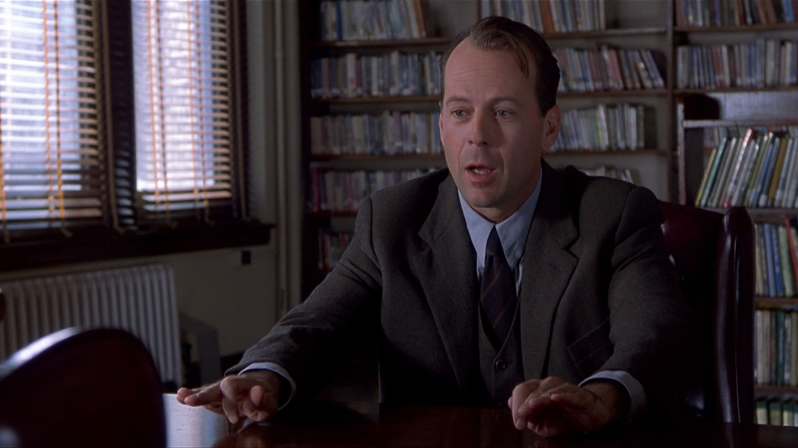
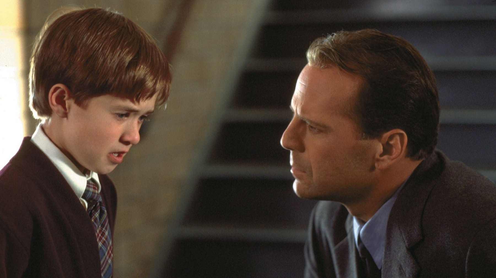
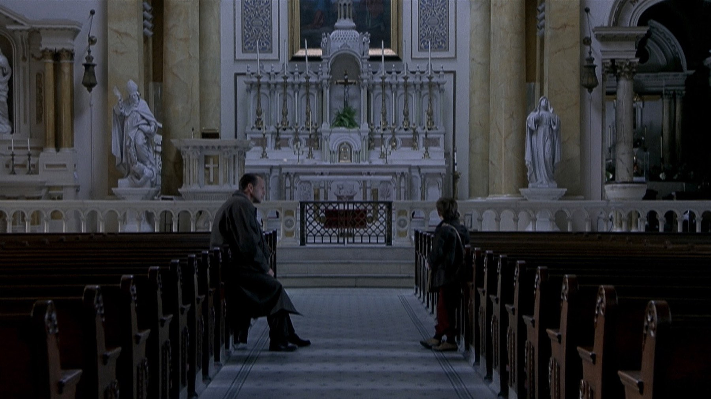

Il sesto senso, il finale spiegato (spoiler)
Perché Malcolm non si accorge di essere morto e dove Shyamalan ha nascosto la verità fin dalla prima scena
Un bambino sussurra la frase più famosa del cinema thriller degli ultimi trent'anni e lo psicologo che gli sta davanti non fa una piega. Perché il dottor Crowe è l'unico, in sala, a non capire che quella frase parla anche di lui. Questa pagina spiega il finale e rivela il colpo di scena de Il sesto senso: se non avete visto il film, tornate dopo.
Il film in breve
Scritto e diretto da M. Night Shyamalan, Il sesto senso (The Sixth Sense) ha avuto una prima il 2 agosto 1999 e un'uscita ampia il 6 agosto. È costato 40 milioni di dollari e ne ha incassati 672,8 milioni nel mondo, il secondo risultato dell'anno. Il protagonista è Bruce Willis, nei panni dello psicologo; accanto a lui il piccolo Haley Joel Osment, la madre di Toni Collette e la moglie di Olivia Williams. Ha ottenuto sei candidature agli Oscar, tra cui film, regia e sceneggiatura originale, senza vincerne nessuno. In Italia è arrivato nelle sale il 29 ottobre 1999.

Cosa succede davvero a Malcolm
Malcolm Crowe è uno psicologo infantile che cerca di rimediare a un fallimento seguendo Cole, un bambino che dice di vedere i morti. Il colpo di scena è che Malcolm è stato ucciso da un ex paziente prima dell'inizio della storia: tutto il resto del film lo vediamo da fantasma, convinto di essere vivo.
La chiave è ciò che Cole confida a Malcolm, come riassume Cinefilos: i fantasmi non sanno di essere morti. Malcolm, che crede di avere un matrimonio in crisi e una moglie distante, è l'esempio perfetto. Nella nostra lettura Anna non lo ignora per freddezza: non può vederlo. La regia lo lascia intendere con calma e noi, come lui, preferiamo non accorgercene.
Il momento della rivelazione
Il momento decisivo è quello della fede nuziale. Nella scena finale la fede cade dalla mano di Anna e Malcolm si accorge di non portarla più al dito. Cinefilos legge la scena come il momento in cui Anna accetta di andare avanti. Noi aggiungiamo che è anche il momento in cui Malcolm smette di cercare risposte e capisce di poter finalmente lasciarla andare.

Gli indizi che avevamo davanti
La seconda visione cambia tutto. Con il finale in mente, la distanza tra Malcolm e Anna smette di essere un problema di coppia e diventa un indizio: lui crede che lei non gli presti più attenzione, mentre lei non può vederlo. E la frase più famosa del film, quel «vedo la gente morta», acquista un doppio senso. Per noi il colpo di scena non è una truffa perché Shyamalan non mente: lascia che sia lo spettatore a saltare alle conclusioni.
C'è anche un codice visivo. Shyamalan ha usato il rosso con parsimonia per segnare ciò che nella realtà è stato toccato dall'aldilà. Le riprese si sono svolte in gran parte a Filadelfia, quasi in ordine cronologico. Per noi funziona anche perché Willis tiene Malcolm su una calma da uomo che non ha niente da nascondere: non lo sa.
Un altro indizio sta nel guardaroba. I vestiti di Malcolm sono quelli che indossava la sera prima della sua morte. È un dettaglio da costumista che alla prima visione non nota nessuno e che, a ripensarci, rende il personaggio quasi fermo nel tempo.
Come è nato un film così
La storia produttiva è quasi un thriller a parte. Wikipedia racconta che la sceneggiatura di Shyamalan fu acquistata per 3 milioni di dollari da David Vogel, allora presidente della produzione della Disney, senza l'approvazione dei vertici. Vogel fu licenziato e i diritti passarono a Spyglass Entertainment, mentre la Disney mantenne la distribuzione e il 12,5% dei ricavi. Un acquisto contestato dall'azienda si trasformò nel secondo successo commerciale del 1999.
Anche il cast ha una storia curiosa. Bruce Willis entrò nel progetto, riferisce la stessa pagina, come parte di un accordo per compensare lo studio dopo il naufragio di Broadway Brawler. Il giovane Haley Joel Osment colpì Shyamalan con un provino in video: il regista vedeva il ruolo di Cole più cupo e chiuso, ma lo convinse la vulnerabilità del ragazzo. Nel nostro giudizio è la scelta che regge il film: la paura di Cole non ha mai l'aria di una recita.
Che cosa ha lasciato
Gli Oscar lo hanno candidato sei volte, tra l'altro per film, regia, sceneggiatura originale e le due interpretazioni di Osment e Collette, senza assegnargli nessuna statuetta. Ha ottenuto però il Nebula Award per la sceneggiatura. La battuta del bambino compare al 44° posto nella classifica delle frasi di film dell'American Film Institute, e il titolo è all'89° posto nella lista dei cento film dell'istituto aggiornata per il decennale. Rotten Tomatoes lo sintetizza oggi con l'86% di giudizi positivi.
Il senso dell'addio
Il vero finale non è la sorpresa ma l'addio. Malcolm accetta la propria condizione e lascia andare Anna. Cinefilos lo riassume come accettazione della morte e aggiunge che i legami d'amore la superano: su questo siamo d'accordo. Dice una cosa semplice e rara per un thriller: chi resta e chi se ne va hanno bisogno di salutarsi, e il sollievo arriva quando succede.
Il limite sta nella fama stessa del film. Oggi tutti conoscono il colpo di scena e la prima visione perfetta è impossibile. Il consiglio è guardarlo come un dramma sul lutto, non come un rompicapo: in questa chiave regge benissimo, e la seconda visione è più bella della prima.
Dove vederlo
In Italia, a ottobre 2026, Il sesto senso è su Netflix. In alternativa si noleggia a 3,99 euro su Amazon Prime Video, Rakuten TV e Timvision. Le disponibilità cambiano spesso: conviene ricontrollare prima di guardarlo.
Il sesto senso non è un film sul colpo di scena: è un film sul lutto che usa il colpo di scena per farsi ascoltare. Per questo regge anche quando sai tutto.
Domande frequenti
Cosa scopre Malcolm alla fine de Il sesto senso?
Scopre di essere morto da prima dell'inizio della storia: lo ha ucciso un ex paziente, e da allora si aggira tra i vivi senza saperlo.
Qual è l'indizio più chiaro del finale?
La fede nuziale: nella scena finale cade dalla mano della moglie Anna e Malcolm si accorge di non portarla più al dito.
Dove si vede Il sesto senso in Italia?
A ottobre 2026 è in streaming su Netflix; si noleggia anche su Amazon Prime Video, Rakuten TV e Timvision.